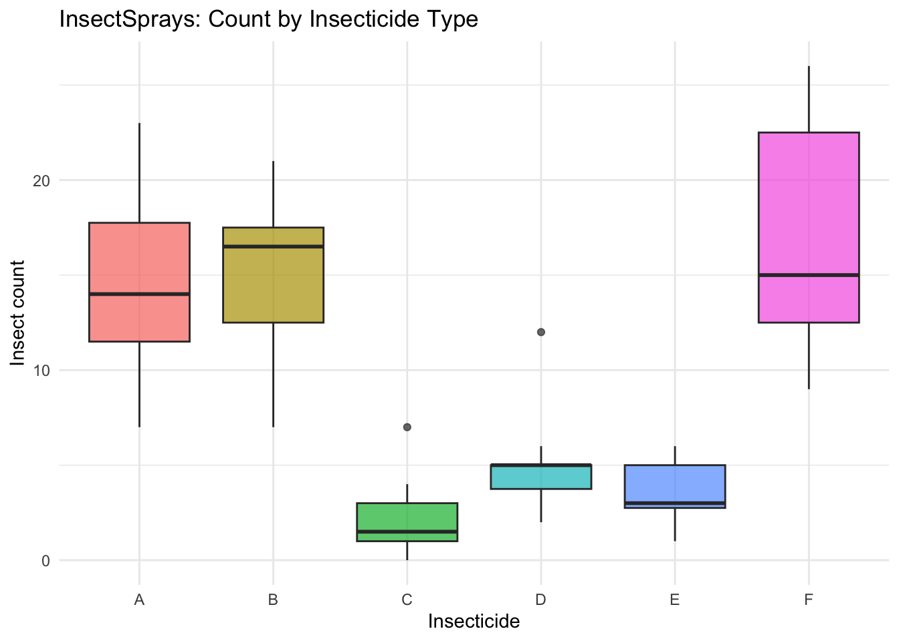
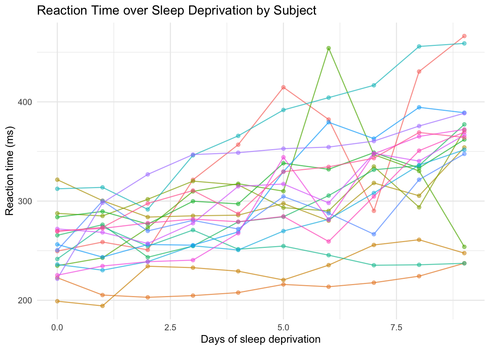
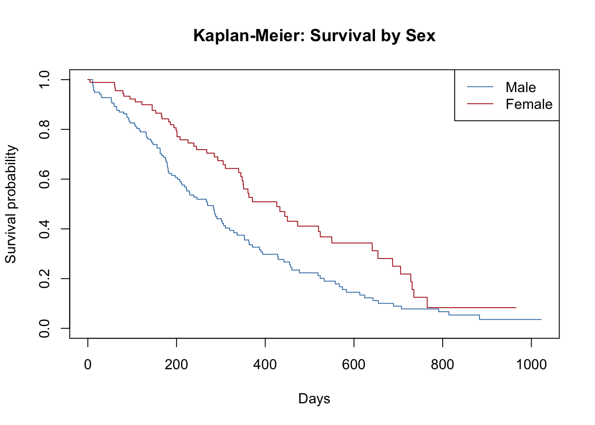

This document describes the datasets used throughout the course. Each entry includes a description, the relevant course days, a load test, exploratory checks, and notes on any cleaning steps needed before analysis.
All datasets are either built into R (no file needed), available through an R package, or stored as .csv files in the data/ folder of the course repository.
2 Framingham Heart Study
2.1 Source
The Framingham Heart Study is a landmark longitudinal cohort study of cardiovascular disease risk factors, initiated in 1948 in Framingham, Massachusetts. The teaching dataset used here is a publicly available subset widely used in statistics education.
File:data/framingham.csv (in the course GitHub repository)
Relevant course days: Days 2–10 (used as the primary dataset throughout Weeks 1 and 2)
2.2 Description
The dataset contains demographic and cardiovascular risk factor information on 4,240 participants. The primary outcome of interest is the 10-year risk of coronary heart disease (TenYearCHD).
Variable
Type
Description
male
Binary
Sex (0 = Female, 1 = Male)
age
Continuous
Age in years
education
Categorical
1 = Some HS, 2 = HS Diploma, 3 = Some College, 4 = College Degree
Rows: 4,240
Columns: 16
$ male <fct> Male, Female, Male, Female, Female, Female, Female, Fe…
$ age <dbl> 39, 46, 48, 61, 46, 43, 63, 45, 52, 43, 50, 43, 46, 41…
$ education <fct> College Degree, HS Diploma, Some HS, Some College, Som…
$ currentSmoker <fct> Non-smoker, Non-smoker, Smoker, Smoker, Smoker, Non-sm…
$ cigsPerDay <dbl> 0, 0, 20, 30, 23, 0, 0, 20, 0, 30, 0, 0, 15, 0, 9, 20,…
$ BPMeds <fct> No, No, No, No, No, No, No, No, No, No, No, No, No, Ye…
$ prevalentStroke <fct> No, No, No, No, No, No, No, No, No, No, No, No, No, No…
$ prevalentHyp <fct> No, No, No, Yes, No, Yes, No, No, Yes, Yes, No, No, Ye…
$ diabetes <fct> No, No, No, No, No, No, No, No, No, No, No, No, No, No…
$ totChol <dbl> 195, 250, 245, 225, 285, 228, 205, 313, 260, 225, 254,…
$ sysBP <dbl> 106.0, 121.0, 127.5, 150.0, 130.0, 180.0, 138.0, 100.0…
$ diaBP <dbl> 70.0, 81.0, 80.0, 95.0, 84.0, 110.0, 71.0, 71.0, 89.0,…
$ BMI <dbl> 26.97, 28.73, 25.34, 28.58, 23.10, 30.30, 33.11, 21.68…
$ heartRate <dbl> 80, 95, 75, 65, 85, 77, 60, 79, 76, 93, 75, 72, 98, 65…
$ glucose <dbl> 77, 76, 70, 103, 85, 99, 85, 78, 79, 88, 76, 61, 64, 8…
$ TenYearCHD <fct> No, No, No, Yes, No, No, Yes, No, No, No, No, No, No, …
2.4 Exploratory Checks
summary(framingham)
male age education currentSmoker
Female:2420 Min. :32.00 Some HS :1720 Non-smoker:2145
Male :1820 1st Qu.:42.00 HS Diploma :1253 Smoker :2095
Median :49.00 Some College : 689
Mean :49.58 College Degree: 473
3rd Qu.:56.00 NA's : 105
Max. :70.00
cigsPerDay BPMeds prevalentStroke prevalentHyp diabetes
Min. : 0.000 No :4063 No :4215 No :2923 No :4131
1st Qu.: 0.000 Yes : 124 Yes: 25 Yes:1317 Yes: 109
Median : 0.000 NA's: 53
Mean : 9.006
3rd Qu.:20.000
Max. :70.000
NA's :29
totChol sysBP diaBP BMI
Min. :107.0 Min. : 83.5 Min. : 48.0 Min. :15.54
1st Qu.:206.0 1st Qu.:117.0 1st Qu.: 75.0 1st Qu.:23.07
Median :234.0 Median :128.0 Median : 82.0 Median :25.40
Mean :236.7 Mean :132.4 Mean : 82.9 Mean :25.80
3rd Qu.:263.0 3rd Qu.:144.0 3rd Qu.: 90.0 3rd Qu.:28.04
Max. :696.0 Max. :295.0 Max. :142.5 Max. :56.80
NA's :50 NA's :19
heartRate glucose TenYearCHD
Min. : 44.00 Min. : 40.00 No :3596
1st Qu.: 68.00 1st Qu.: 71.00 Yes: 644
Median : 75.00 Median : 78.00
Mean : 75.88 Mean : 81.96
3rd Qu.: 83.00 3rd Qu.: 87.00
Max. :143.00 Max. :394.00
NA's :1 NA's :388
# Missing values per columncolSums(is.na(framingham))
The binary and categorical variables are stored as integers in the raw file and must be converted to factors using mutate() before analysis. The load code above does this automatically.
Missing values are present in seven variables: education, cigsPerDay, BPMeds, totChol, BMI, heartRate, and glucose. Always use na.rm = TRUE in summary functions and be aware of how your modeling function handles missing data (most will drop rows with any NA by default).
After applying the filter(!is.na(...)) approach used in the Day 7 lab, the complete-case sample is approximately 3,658 participants.
3 Airway (RNA-Seq)
3.1 Source
Bioconductor package: airway
Himes et al. (2014). RNA-Seq Transcriptome Profiling Identifies CRISPLD2 as a Glucocorticoid Responsive Gene that Modulates Cytokine Function in Airway Smooth Muscle Cells. PLOS ONE.
This dataset contains read counts from an RNA-sequencing experiment on human airway smooth muscle cell lines. Four cell lines were treated with dexamethasone (a corticosteroid) and four were untreated controls.
Component
Description
Dimensions
63,677 genes × 8 samples
Samples
4 treated (dexamethasone) + 4 untreated controls
Format
RangedSummarizedExperiment object
Count matrix
Access with assay(airway)
Sample metadata
Access with colData(airway)
Gene metadata
Access with rowData(airway)
3.3 Install and Load
# Install Bioconductor and the airway package (run once)if (!requireNamespace("BiocManager", quietly =TRUE))install.packages("BiocManager")BiocManager::install("airway")
# Missing values (should be none in count data)sum(is.na(airway_counts))
[1] 0
# Distribution of counts for the first samplesummary(airway_counts[, 1])
Min. 1st Qu. Median Mean 3rd Qu. Max.
0.0 0.0 0.0 324.1 10.0 297906.0
3.5 Cleaning Notes
assay(airway) extracts the raw integer count matrix. Sample metadata (colData) and gene metadata (rowData) must be extracted separately if needed as plain data frames.
Many genes have zero counts across all samples. DESeq2 handles this automatically through its filtering steps and does not require manual removal of zero-count genes.
The dex column in colData(airway) records treatment status: "trt" (dexamethasone treated) vs. "untrt" (control). This is the grouping variable used in the Day 12 differential expression analysis.
4 InsectSprays
4.1 Source
Built-in base R dataset (datasets package — no install required)
Relevant course days: Day 8 (GLMs — Poisson regression for count outcomes)
4.2 Description
This dataset records the effectiveness of six different insecticide sprays (A through F) applied to agricultural experimental units. It is a classic example for count data analysis using Poisson or negative binomial regression.
Variable
Type
Description
count
Integer
Number of insects in each experimental unit
spray
Factor
Insecticide type (A, B, C, D, E, or F)
72 observations total (12 per spray type).
4.3 Load
data(InsectSprays)head(InsectSprays)
count spray
1 10 A
2 7 A
3 20 A
4 14 A
5 14 A
6 12 A
# A tibble: 6 × 6
spray n mean sd min max
<fct> <int> <dbl> <dbl> <dbl> <dbl>
1 A 12 14.5 4.72 7 23
2 B 12 15.3 4.27 7 21
3 C 12 2.08 1.98 0 7
4 D 12 4.92 2.50 2 12
5 E 12 3.5 1.73 1 6
6 F 12 16.7 6.21 9 26
# Visualizeggplot(InsectSprays, aes(x = spray, y = count, fill = spray)) +geom_boxplot(alpha =0.7, show.legend =FALSE) +labs(x ="Insecticide", y ="Insect count",title ="InsectSprays: Count by Insecticide Type") +theme_minimal()

# Missing valuescolSums(is.na(InsectSprays))
count spray
0 0
4.5 Cleaning Notes
No missing values. No factor conversion needed — spray is already stored as a factor with six levels (A through F). Spray type C, D, and E appear to be substantially more effective (lower counts) than A, B, and F, making this a clear case for demonstrating group comparisons with count outcomes.
5 sleepstudy (Longitudinal)
5.1 Source
Package: lme4
Belenky et al. (2003). Patterns of performance degradation and restoration during sleep restriction and subsequent recovery: A sleep dose-response study. Journal of Sleep Research.
Relevant course days: Day 10 (mixed models for repeated/clustered data)
5.2 Description
This dataset contains average reaction times from a psychomotor vigilance test recorded daily from 18 subjects over 10 days in a sleep deprivation study. On Day 0, subjects had a normal night of sleep. Beginning that night, they were restricted to 3 hours of sleep per night for 9 consecutive nights.
Reaction Days Subject
Min. :194.3 Min. :0.0 308 : 10
1st Qu.:255.4 1st Qu.:2.0 309 : 10
Median :288.7 Median :4.5 310 : 10
Mean :298.5 Mean :4.5 330 : 10
3rd Qu.:336.8 3rd Qu.:7.0 331 : 10
Max. :466.4 Max. :9.0 332 : 10
(Other):120
# Reaction time trajectories per subjectggplot(sleepstudy, aes(x = Days, y = Reaction, group = Subject,color = Subject)) +geom_line(alpha =0.7, show.legend =FALSE) +geom_point(alpha =0.5, show.legend =FALSE) +labs(x ="Days of sleep deprivation",y ="Reaction time (ms)",title ="Reaction Time over Sleep Deprivation by Subject") +theme_minimal()

# Missing valuescolSums(is.na(sleepstudy))
Reaction Days Subject
0 0 0
5.5 Cleaning Notes
No missing values. Subject is already stored as a factor. The key feature of this dataset for Day 10 is that each subject has a different baseline reaction time (random intercept) and a different rate of decline with sleep deprivation (random slope) — making it an ideal demonstration of the random intercept-and-slope mixed model.
6 lung (Survival Analysis)
6.1 Source
Package: survival
Data from the North Central Cancer Treatment Group (NCCTG). Originally published in Loprinzi et al. (1994). Prospective evaluation of prognostic variables from patient-completed questionnaires. Journal of Clinical Oncology.
This dataset contains clinical and performance data from 228 patients with advanced-stage lung cancer. The primary outcome is time to death, with some patients censored (lost to follow-up or alive at end of study).
Variable
Type
Description
inst
Integer
Institution code
time
Integer
Survival time (days)
status
Binary
Censoring status (1 = censored, 2 = dead)
age
Integer
Age in years
sex
Binary
Sex (1 = Male, 2 = Female)
ph.ecog
Integer
ECOG performance score (0 = good, 4 = bedridden)
ph.karno
Integer
Karnofsky score rated by physician (0–100)
pat.karno
Integer
Karnofsky score rated by patient (0–100)
meal.cal
Integer
Calories consumed at meals
wt.loss
Integer
Weight loss in past 6 months (lbs)
Note
In the lung dataset, status = 1 means censored and status = 2 means dead. This is the opposite of the convention used in many other survival datasets, where 1 = event. The survival package handles this correctly when you use Surv(time, status == 2).
'data.frame': 228 obs. of 10 variables:
$ inst : num 3 3 3 5 1 12 7 11 1 7 ...
$ time : num 306 455 1010 210 883 ...
$ status : num 2 2 1 2 2 1 2 2 2 2 ...
$ age : num 74 68 56 57 60 74 68 71 53 61 ...
$ sex : num 1 1 1 1 1 1 2 2 1 1 ...
$ ph.ecog : num 1 0 0 1 0 1 2 2 1 2 ...
$ ph.karno : num 90 90 90 90 100 50 70 60 70 70 ...
$ pat.karno: num 100 90 90 60 90 80 60 80 80 70 ...
$ meal.cal : num 1175 1225 NA 1150 NA ...
$ wt.loss : num NA 15 15 11 0 0 10 1 16 34 ...
summary(lung)
inst time status age
Min. : 1.00 Min. : 5.0 Min. :1.000 Min. :39.00
1st Qu.: 3.00 1st Qu.: 166.8 1st Qu.:1.000 1st Qu.:56.00
Median :11.00 Median : 255.5 Median :2.000 Median :63.00
Mean :11.09 Mean : 305.2 Mean :1.724 Mean :62.45
3rd Qu.:16.00 3rd Qu.: 396.5 3rd Qu.:2.000 3rd Qu.:69.00
Max. :33.00 Max. :1022.0 Max. :2.000 Max. :82.00
NA's :1
sex ph.ecog ph.karno pat.karno
Min. :1.000 Min. :0.0000 Min. : 50.00 Min. : 30.00
1st Qu.:1.000 1st Qu.:0.0000 1st Qu.: 75.00 1st Qu.: 70.00
Median :1.000 Median :1.0000 Median : 80.00 Median : 80.00
Mean :1.395 Mean :0.9515 Mean : 81.94 Mean : 79.96
3rd Qu.:2.000 3rd Qu.:1.0000 3rd Qu.: 90.00 3rd Qu.: 90.00
Max. :2.000 Max. :3.0000 Max. :100.00 Max. :100.00
NA's :1 NA's :1 NA's :3
meal.cal wt.loss
Min. : 96.0 Min. :-24.000
1st Qu.: 635.0 1st Qu.: 0.000
Median : 975.0 Median : 7.000
Mean : 928.8 Mean : 9.832
3rd Qu.:1150.0 3rd Qu.: 15.750
Max. :2600.0 Max. : 68.000
NA's :47 NA's :14
# Missing values per columncolSums(is.na(lung))
inst time status age sex ph.ecog ph.karno pat.karno
1 0 0 0 0 1 1 3
meal.cal wt.loss
47 14
round(colSums(is.na(lung)) /nrow(lung) *100, 1)
inst time status age sex ph.ecog ph.karno pat.karno
0.4 0.0 0.0 0.0 0.0 0.4 0.4 1.3
meal.cal wt.loss
20.6 6.1
# Event ratetable(lung$status)
1 2
63 165
prop.table(table(lung$status))
1 2
0.2763158 0.7236842
# Quick Kaplan-Meier curvekm_fit <-survfit(Surv(time, status ==2) ~ sex, data = lung)plot(km_fit, col =c("steelblue", "firebrick"),xlab ="Days", ylab ="Survival probability",main ="Kaplan-Meier: Survival by Sex")legend("topright", legend =c("Male", "Female"),col =c("steelblue", "firebrick"), lty =1)

6.5 Cleaning Notes
Missing values are present in inst, ph.ecog, ph.karno, pat.karno, meal.cal, and wt.loss. These are handled automatically by survfit() and coxph(), which use complete cases for each model.
sex is coded 1 = Male and 2 = Female — convert to a factor with informative labels for plots: mutate(sex = factor(sex, levels = c(1,2), labels = c("Male","Female"))).
The status coding (1 = censored, 2 = dead) is non-standard. Always use Surv(time, status == 2) to define the survival object correctly.